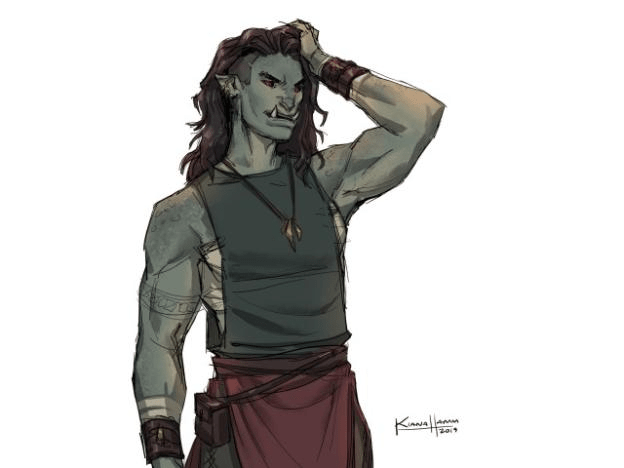

Resumen
Título: Líder de tripulación de Orcos
Afiliación: Grey Castle
Lugar de Origen o donde fué conocido: Iaggoven
Edad: ???
Raza: Orog
Clase: Warrior
Tamaño: Medium
Apariencia
Ropa verde, túnica roja, collar de huesos. Pelo café mediano, razurado de los lados. Ojos cafés. Tatuaje en el brazo derecho.
Dhenkiek
Dhenkiek es la lider de los orcos que venían en un barco camino a Iwuthra. Capturó a las tres tortugas hermanas cuando las interceptó en camino a Iwuthra, y casi mata a Gar y a Golo. Los encarceló en Grey Castle, Iaggoven. Dhenkiek murió a manos de "Las tortugas G", cuando escaparon de Grey Castle.